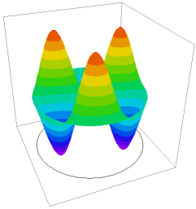

|
drumhead |

  
|
|
drumhead |
|
{ DRUMHEAD.PDE
*******************************************************************
This example illustrates the use of FlexPDE in Eigenvalue problems, or
Modal Analysis.
*******************************************************************
The two-dimensional initial-boundary value problem associated with the
scalar wave equation can be written as
c^2*del2(u) - dtt(u) = 0
with accompanying initial values and boundary conditions
u = f(s,t) on S1
dn(u) + a*u = g(s,t) on S2.
If we assume that solutions have the form
u(x,y,t) = exp(i*w*t)*v(x,y)
then the equation becomes
del2(v) + lambda*v = 0
with lambda = (w/c)^2, and with boundary conditions
v = 0 on S1
dn(v) + a*v = 0 on S2.
The values of lambda for which this system has a non-trivial solution
are known as the eigenvalues of the system, and the corresponding solutions
are known as the eigenfunctions or vibration modes of the system.
In this problem, we determine the eight lowest-energy vibrational modes of
a circular drumhead, clamped on the periphery.
This problem can be solved analytically. The solutions are of the form
v = Jn(r*jnm)*exp(i*n*theta),
where Jn is the Bessel function of order n,
jnm is the m-th root of Jn.
The eigenvalues are then just the sequence of jnm^2. In increasing order, or
5.7832, 14.682, 14.682, 26.375, 26.375, 30.471, 40.706, 40.706
With errlim=0.001, FlexPDE in the current test gives
5.7832, 14.682, 14.682, 26.377, 26.377, 30.476, 40.718, 40.720
}
title "Vibrational modes of a drumhead"
select
{ Define the number of vibrational modes desired.
The appearance of this selector tells FlexPDE
to perform an eigenvalue calculation, and to
define the name LAMBDA to represent the eigenvalue: }
modes=8
Variables u
equations { the eigenvalue equation } U: div(grad(u)) + lambda*u = 0
boundaries Region 1 start(0,-1) value(u) = 0 arc(center=0,0) angle 360
monitors { repeated for all modes } contour(u)
plots { repeated for all modes } contour(u) surface(u)
end |
 |